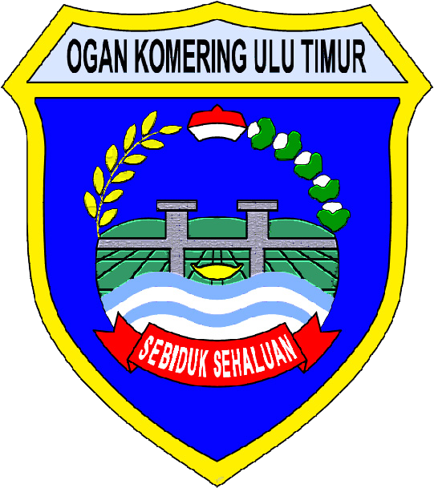

Pelepasan Siswa
SD Negeri 01 Toto Rejo
Tahun Ajaran 2025/2026
← → Navigasi · Spasi Auto-play · F Balik Foto · F11 Layar Penuh · M Mute

Selamat & Bahagia
SD Negeri 01 Toto Rejo
Tahun Ajaran 2025 / 2026
Tahun Ajaran 2025/2026
Tahun Ajaran 2025/2026
← → Navigasi · Spasi Auto-play · F Balik Foto · F11 Layar Penuh · M Mute